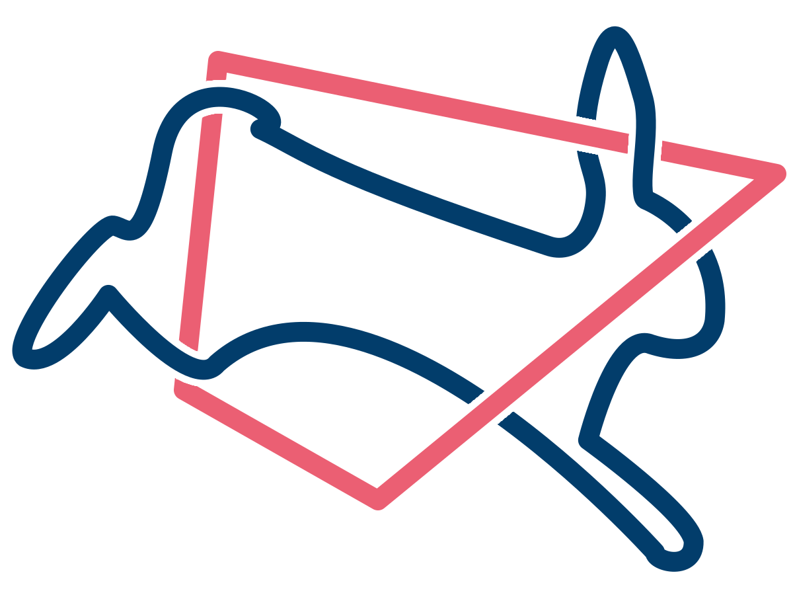

 HOPS Resources
Interactive polytope sampling
inspired by and adopted from
Chi Feng's masterful visualisation
PolyRound for efficient and effective polytope rounding
C++ API documentation
hopsy (Python3 API)
HOPS source code
Corresponding Paper
Replication Data